Часть 1 · шаг 1 из 14 · ≈3 мин · формат: ролик-разбор
Линии времени режут пласты наискосок
Clinoforms crosscut lithostratigraphic boundaries. Почему клиноформы (линии геологического времени) пересекают литологические границы и что это значит для залежи.
Почему этот шаг здесь
Конец §9.3: прежде чем разбирать речную дельту, нужно понять, почему корреляция по времени и по породе даёт разные пласты. модельстр. 410
Суть
Клиноформы — линии геологического времени — пересекают границы литологических пачек. Поэтому корреляция по сходству пород и корреляция по времени соединяют скважины по-разному. При корреляции по времени песчаники между скважинами могут оказаться разобщены глинами. модельстр. 410
Как это работает
Механизм
Для правильной корреляции в недрах важно понимать: клиноформы (clinoforms) представляют линии геологического времени и пересекают литостратиграфические границы. модельстр. 410
Гипотетический пример на рис. 9.10 сравнивает корреляцию по литофациям (интервалам с похожим откликом на каротаже) и по геологическому времени. модельстр. 410
При корреляции по времени глинистые и гетеролитные (переслаивающиеся) интервалы разделяют песчаные. Пески между скважинами 1 и 2 оказываются не сообщающимися. модельстр. 410
Как делает специалист
Такое разобщение ухудшит работу заводнения (waterflood) и продуктивность отдельной скважины. модельстр. 410
Нюансы
На рис. 9.10 при литостратиграфической корреляции пески выглядят непрерывными, а при хроностратиграфической их разделяют гетеролиты и глины. модельстр. 410
Частая ошибка
Если пласты похожи по каротажу в двух скважинах, это один непрерывный пласт.
Что это значит для данных
Корреляция по сходству каротажа соединяет одинаковые породы, но не одновозрастные. модельстр. 410
Если коррелировать только по литологии, модель покажет связность песков, которой нет. модельстр. 410
Связность песков стоит проверять данными разработки: интерференцией скважин и откликом на закачку. гипотезамодельстр. 410
Решение на данных
Признаки
пески похожи по каротажу в двух скважинах
наклонные линии времени пересекают пачки
ПравилоСвязность песков проверяют по корреляции по времени, а не только по литологииВыводПески могут быть разобщены глинамиКонтрпримерЕсли пески действительно одновозрастны и сливаются, они сообщаются
Аналогия
Похоже на сопоставление версий файла по похожему содержимому вместо меток времени: можно склеить разные версии. модель
Где аналогия не работает: Метки времени в системе точные, а линии времени в разрезе сами выводятся интерпретацией.
Линза неэффективности
Входные данныеКаротаж двух и более скважинРучные шагиПроведение корреляционных линийТочки сужденияКоррелировать по литологии или по времениВремяВ главе не указаноТипичные ошибкиСоединить несвязанные пески одной линией
Новые понятия
клиноформа (clinoform) — Наклонная поверхность в разрезе, отвечающая одному моменту геологического времени
литостратиграфическая корреляция — Соединение скважин по сходству пород и каротажа
хроностратиграфическая корреляция — Соединение скважин по одновозрастным поверхностям
гетеролиты (heterolithics) — Тонкое переслаивание песка и глины
заводнение (waterflood) — Закачка воды в пласт для вытеснения нефти
Источник
4 цитаты автора со страницами
наблюдение. Клиноформы представляют линии геологического времени и пересекают литостратиграфические границы. пересказ модели
«It is important for proper subsurface correlations to understand that clinoforms, which represent geological time lines, crosscut lithostratigraphic boundaries.» — автор, стр. 410
вывод. Глинистые и гетеролитные интервалы разделяют песчаные, поэтому пески между скважинами 1 и 2 не сообщаются. пересказ модели
«Note that shaley and heterolithic intervals separate sandy intervals, so that the sands between wells 1 and 2 are not in communication.» — автор, стр. 410
вывод. Это разобщение ухудшит заводнение и продуктивность отдельной скважины. пересказ модели
«This feature will adversely affect waterflood performance as well as single-well productivity.» — автор, стр. 410
наблюдение. При литостратиграфической корреляции пески выглядят непрерывными, а при хроностратиграфической их разделяют гетеролиты и глины. пересказ модели
«Note the heterolithics and shales that separate sands in the chronostratigraphic correlation compared with the continuity of the sands in the lithostratigraphic correlation.» — автор, стр. 410
Иллюстрации
Место шага «Линии времени режут пласты наискосок» в главе: на что опирается и куда ведёт. класс B · схема
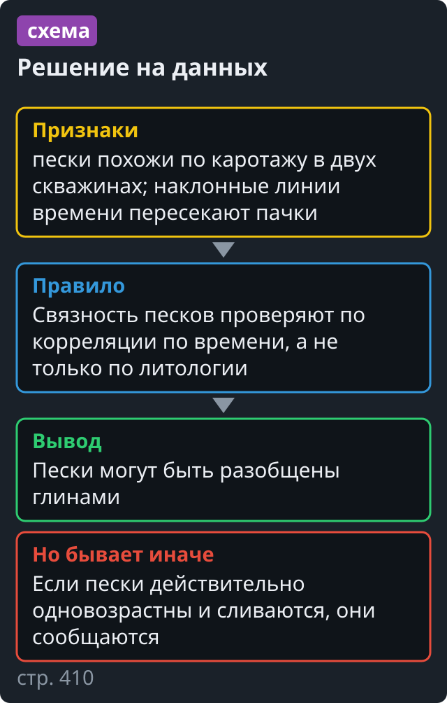
Решение на данных в шаге «Линии времени режут пласты наискосок»: признаки, правило, вывод. класс B · схемаАнимация логики шага (признаки → правило → вывод), 15 с, без звука. класс B · схема · шаблон step_procedure; текст и страницы — из слоя
Проверь себя
Часть 1 · шаг 2 из 14 · ≈3 мин · формат: интерактив
Пример дельты Меконга
Mekong River Delta correlations. Как датированные линии времени в дельте Меконга показывают наступание дельты и разрывы пачек.
Почему этот шаг здесь
Реальный пример к идее клиноформ: датированные линии времени показывают, как наступала дельта. модельстр. 410, 411, 412
Суть
В современной дельте Меконга наступание датировано за последние 6000 лет. Сравнение двух корреляций показывает, что линии времени пересекают границы литофаций. Истинная корреляция по времени выявляет латеральные разрывы внутри литологических пачек. модельстр. 410, 411, 412
Как это работает
Механизм
Похожий пример — современная дельта Меконга (рис. 9.11, по Gani и Bhattacharya, 2005). Наступание дельты (progradation) датировано за последние 6000 лет. модельстр. 410
Приведены литостратиграфическая и секвенс-стратиграфическая (хроностратиграфическая) корреляции, чтобы показать пересечение линий времени и границ литофаций. модельстр. 410
Истинная хроностратиграфическая корреляция показывает возможность латеральных разрывов внутри литостратиграфических интервалов. модельстр. 410
Как делает специалист
На карте рис. 9.11a верхняя дельтовая равнина зелёная, нижняя — оранжевая, чёрные линии — береговые валы. Показан профиль A–B со скважинами. модельстр. 411
На рис. 9.11b скважины сопоставлены по палеообстановкам. Пронумерованные линии, пересекающие границы литофаций, — измеренные линии времени в тысячах лет; они показывают наступание дельты. модельстр. 412
На рис. 9.11c скважины сопоставлены по линиям времени. Видна разница в корреляции одних и тех же пачек при двух подходах. модельстр. 412
Что это значит для данных
Датировки дают линии времени, по которым коррелируют скважины. модельстр. 410, 411, 412
Без датировок линии времени приходится выводить, и разрывы пачек легко пропустить. модельстр. 410, 411, 412
Датированные разрезы современных дельт годятся как обучающие примеры для автоматической корреляции. гипотезамодельстр. 410, 411, 412
Аналогия
Похоже на журнал изменений с метками времени: видно, в каком порядке нарастала система. модель
Где аналогия не работает: Журнал пишет каждое событие, а в разрезе сохранилась лишь часть поверхностей, и возраст определён по отдельным точкам.
Линза неэффективности
Входные данныеСкважины, палеообстановки, датировкиРучные шагиПостроение двух корреляций и сравнениеТочки сужденияКакая корреляция отражает связностьВремяВ главе не указаноТипичные ошибкиОпираться только на литологию
Новые понятия
наступание дельты (progradation) — Продвижение дельты в сторону моря
секвенс-стратиграфия — Расчленение разреза по поверхностям, связанным с колебаниями уровня моря
дельтовая равнина — Надводная часть дельты
береговой вал (beach ridge) — Вытянутая гряда песка вдоль берега
Источник
3 цитаты автора со страницами
наблюдение. Наступание дельты Меконга датировано за последние 6000 лет. пересказ модели
«Progradation of the delta has been age-dated for the last 6000 years.» — автор, стр. 410
вывод. Истинная хроностратиграфическая корреляция показывает возможность латеральных разрывов внутри литостратиграфических интервалов. пересказ модели
«The true chronostratigraphic correlations demonstrate the potential for lateral discontinuities within the lithostratigraphic intervals.» — автор, стр. 410
наблюдение. Пронумерованные линии времени пересекают границы литофаций и показывают наступательный характер дельты. пересказ модели
«Numbered lines that crosscut lithofacies boundaries are measured geologic time lines in 1000s of years; they demonstrate the progradational nature of the delta.» — автор, стр. 412
Иллюстрации
Место шага «Пример дельты Меконга» в главе: на что опирается и куда ведёт. класс B · схемаАнимация логики шага (утверждения шага по порядку), 12 с, без звука. класс B · схема · шаблон process_state; текст и страницы — из слоя
Часть 1 · шаг 3 из 14 · ≈2 мин · формат: интерактив
Протоки дельты перескакивают
Delta distributary switching. Переключение распределительных проток как фактор развития дельты.
Почему этот шаг здесь
Кроме уровня моря, дельту меняет смена русел проток; это объясняет, почему дельта растёт лопастями. модельстр. 410, 413
Суть
Дельты подвержены переключению распределительных проток (channel switching). По Overeem и др. (2005), оно может влиять на развитие дельты даже сильнее, чем изменение уровня моря. Модель на рис. 9.12 показывает, как протоки из общей вершины меняют направление. модельстр. 410, 413
Как это работает
Механизм
Помимо колебаний уровня моря, дельты подвержены «процессам переключения распределительных проток», как в модели на рис. 9.12. модельстр. 410, 413
По Overeem и др. (2005), переключение русел может быть даже более важным фактором развития дельтовых систем, чем изменение уровня моря. модельстр. 410
Как делает специалист
Модель на рис. 9.12: распределительные протоки переключаются из общей вершины (apex) на разные направления и участки дельты. модельстр. 413
Частая ошибка
Дельта меняется только от колебаний уровня моря.
Что это значит для данных
Переключение проток создаёт лопасти разного возраста, которые в скважинах выглядят похоже. модельстр. 410, 413
Если не учесть переключение, соседние песчаные лопасти ошибочно соединят в одно тело. модельстр. 410, 413
Положения проток в разные эпохи можно моделировать как ветвление из общей вершины. гипотезамодельстр. 410, 413
Аналогия
Похоже на балансировщик, который переключает трафик на другой сервер, когда текущий перегружен. модель
Где аналогия не работает: Балансировщик переключает мгновенно, а протока переходит за сотни лет и оставляет старую лопасть.
Линза неэффективности
Входные данныеКарты лопастей, модель переключенияРучные шагиВосстановление положения протокТочки сужденияКакой фактор главный: уровень моря или переключениеВремяВ главе не указаноТипичные ошибкиОбъяснять всё только уровнем моря
Новые понятия
распределительная протока (distributary channel) — Рукав реки, на которые она делится в дельте
переключение проток (channel switching) — Смена направления главного рукава дельты
вершина дельты (apex) — Точка, откуда расходятся рукава
Источник
2 цитаты автора со страницами
наблюдение. Помимо колебаний уровня моря, дельты подвержены процессам переключения распределительных проток. пересказ модели
«In addition to sea-level fluctuations, deltas are subject to “delta distributary switching processes,” such as modeled in Fig. 9.12.» — автор, стр. 410
вывод. По Overeem и др., переключение русел может быть даже более важным фактором развития дельт, чем изменение уровня моря. пересказ модели
«According to Overeem et al. (2005), channel switching may be an even more important control on the evolution of deltaic systems than is sea-level change.» — автор, стр. 410
Иллюстрации
Место шага «Протоки дельты перескакивают» в главе: на что опирается и куда ведёт. класс B · схемаАнимация логики шага (утверждения шага по порядку), 9 с, без звука. класс B · схема · шаблон process_state; текст и страницы — из слоя
Часть 1 · шаг 4 из 14 · ≈3 мин · формат: интерактив
Дельты при падении уровня моря
Lowstand or shelf-margin deltas. Дельты низкого стояния: как образуются и чем отличаются от дельт высокого стояния.
Почему этот шаг здесь
Дельты бывают и при понижении уровня моря; важно отличать их от основных дельт высокого стояния. модельстр. 410
Суть
Дельты могут формироваться и при относительном падении уровня моря — это дельты низкого стояния (lowstand, shelf-margin). Падение уровня ведёт к врезанию долин и отступанию берега. Такие дельты обычно меньше и реже дельт высокого стояния. модельстр. 410
Как это работает
Механизм
Дельты могут формироваться и при относительном падении уровня моря. Их часто называют дельтами или системными трактами низкого стояния (lowstand) или края шельфа (shelf-margin), рис. 5.18 и 5.19. модельстр. 410
Они образуются в ответ на раннее падение уровня моря. Оно вызывает врезание долин, отступание береговой линии в сторону моря и её понижение. модельстр. 410
Нюансы
Хотя они важны, дельты низкого стояния обычно не так велики и не так распространены, как дельты высокого стояния (highstand). модельстр. 410
Что это значит для данных
Дельта низкого стояния лежит дальше в бассейне, ниже по разрезу и связана с врезанными долинами. модельстр. 410
Если считать все дельты одинаковыми по размеру, объём лоустендовых тел будет завышен. модельстр. 410
Признаки врезанных долин в каротаже могут указывать на близость дельты низкого стояния. гипотезамодельстр. 410
Аналогия
Похоже на аварийный режим системы: работает, но в меньшем масштабе и реже. модель
Где аналогия не работает: Аварийный режим включают намеренно, а падение уровня моря — внешнее событие.
Линза неэффективности
Входные данныеПоложение в разрезе, признаки врезанияРучные шагиОтнесение дельты к системному трактуТочки сужденияВысокое или низкое стояниеВремяВ главе не указаноТипичные ошибкиПереоценить размер дельты низкого стояния
Новые понятия
дельта низкого стояния (lowstand delta) — Дельта, образованная при пониженном уровне моря
системный тракт (systems tract) — Комплекс отложений одного этапа изменения уровня моря
дельта высокого стояния (highstand delta) — Дельта, образованная при высоком уровне моря
врезание долин (valley incision) — Углубление речных долин при падении уровня моря
Источник
3 цитаты автора со страницами
наблюдение. Дельты могут формироваться и при относительном падении уровня моря. пересказ модели
«Deltas can also form during a relative fall in sea level; these are often referred to as “lowstand” or “shelf-margin” deltas or systems tracts (Figs. 5.18 and 5.19).» — автор, стр. 410
вывод. Раннее падение уровня моря вызывает врезание долин, отступание береговой линии к морю и её понижение. пересказ модели
«These deposits form in response to early fall in sea level, which causes valley incision, and a seaward retreat and lowering of the shoreline.» — автор, стр. 410
наблюдение. Дельты низкого стояния обычно не так велики и не так распространены, как дельты высокого стояния. пересказ модели
«Although important, these lowstand deltas are generally not as large, nor as prevalent as highstand deltas.» — автор, стр. 410
Иллюстрации
Место шага «Дельты при падении уровня моря» в главе: на что опирается и куда ведёт. класс B · схема
Часть 2 · шаг 5 из 14 · ≈4 мин · формат: ролик-шортс
Как растёт речная дельта
River-dominated delta: Mississippi type, progradation and lobe switching. Почему речная дельта наступает на море и почему со временем её протоки переключаются.
Почему этот шаг здесь
Начало §9.4.1: главный механизм роста речной дельты — от наступания в море до смены лопастей. модельстр. 411, 413
Суть
В речной дельте волны и течения слабы, и осадок у берега не разносится. При достаточном пространстве для накопления дельта наступает на море, и линии времени пересекают границы фаций. Со временем вода мелеет, и река переключается в более глубокую сторону. модельстр. 411, 413
Как это работает
Механизм
Дельта Миссисипи (рис. 9.13) давно считается эталоном речной дельты (river-dominated delta), рис. 9.5. модельстр. 411
Сильные волны и течения не доходят до её защищённого берега, поэтому осадок у берега не перерабатывается и не разносится вдоль берега (рис. 9.4, 9.7). модельстр. 411
Со временем, при достаточном пространстве аккомодации (accommodation space) между поверхностью моря и дном, такая дельта наступает в сторону моря (рис. 9.9). Вместе с ней смещаются и зоны дельты (рис. 9.7). модельстр. 411
В этом процессе поверхности мгновений геологического времени пересекают границы между фациями (линии времени, или клиноформы, на рис. 9.9). модельстр. 411
Однако наступание и вертикальное наращивание (aggradation) постепенно уменьшают глубину воды. В какой-то момент главная река переключается в более глубокую воду, к пониженным участкам дна, — так возникает переключение проток (рис. 9.11). модельстр. 411
Как делает специалист
За последние 4600 лет на дельте Миссисипи было не меньше восьми периодов переключения проток и лопастей (рис. 9.12, 9.13). модельстр. 411, 413
Частая ошибка
Дельта растёт вверх на одном месте, как куча песка.
Что это значит для данных
Наступание дельты оставляет в разрезе фации, смещённые к морю вверх по разрезу. модельстр. 411, 413
Лопасти разного возраста в соседних скважинах могут быть не связаны. модельстр. 411, 413
Количество переключений лопастей задаёт, сколько отдельных песчаных тел ожидать в разрезе. гипотезамодельстр. 411, 413
Аналогия
Похоже на рост очереди задач, которая заполняет один сервер и переключается на свободный. модель
Где аналогия не работает: Сервер освобождается, а заполненная лопасть дельты остаётся навсегда и перекрывается новыми.
Линза неэффективности
Входные данныеКарты лопастей, датировки, разрезыРучные шагиВосстановление этапов роста дельтыТочки сужденияГде граница лопастейВремяВ главе не указаноТипичные ошибкиСчитать всю дельту одним телом
Новые понятия
речная дельта (river-dominated delta) — Дельта, где главный фактор — река, а волны и течения слабы
пространство аккомодации (accommodation space) — Место между дном и поверхностью моря, куда может лечь осадок
вертикальное наращивание (aggradation) — Рост толщи вверх
лопасть дельты (lobe) — Часть дельты, построенная одной протокой
Источник
6 цитат автора со страницами
наблюдение. Дельта Миссисипи давно считается эталоном речной дельты. пересказ модели
«The Mississippi River Delta (Fig. 9.13) has long been considered the “type” river-dominated delta (Fig. 9.5).» — автор, стр. 411
вывод. Сильные волны и течения не доходят до её берега, поэтому осадок у берега не перерабатывается и не разносится. пересказ модели
«Strong waves and currents do not impinge upon its protected shoreline, so sediment deposited at and near the shore zone is not reworked or dispersed laterally (Figs. 9.4 and 9.7).» — автор, стр. 411
наблюдение. При достаточном пространстве аккомодации такая дельта наступает в сторону моря. пересказ модели
«With time and sufficient accommodation space between the sea surface and seafloor to accept sediment, such a delta will prograde seaward (Fig. 9.9), as will the delta zones (Fig. 9.7).» — автор, стр. 411
вывод. Поверхности мгновений геологического времени пересекают границы между фациями. пересказ модели
«By that process, surfaces representing instants in geologic time crosscut boundaries between sedimentary facies (see the time lines or clinoforms in Fig. 9.9).» — автор, стр. 411
вывод. Наступание и наращивание постепенно мелят воду, и река переключается в более глубокую воду. пересказ модели
«However, over time, progradation and vertical aggradation lead to a progressive shallowing of the water depth, to the point at which the main river(s) feeding sediment to its delta will shift toward deeper water (toward lower points on the seafloor), thereby causing the distributary-channel switching discussed earlier (Fig. 9.11).» — автор, стр. 411
наблюдение. За последние 4600 лет на дельте Миссисипи было не меньше восьми периодов переключения проток и лопастей. пересказ модели
«During the past 4600 years, there have been no fewer than eight periods of channel and lobe switching on the Mississippi River Delta (Fig. 9.12).» — автор, стр. 411
Иллюстрации
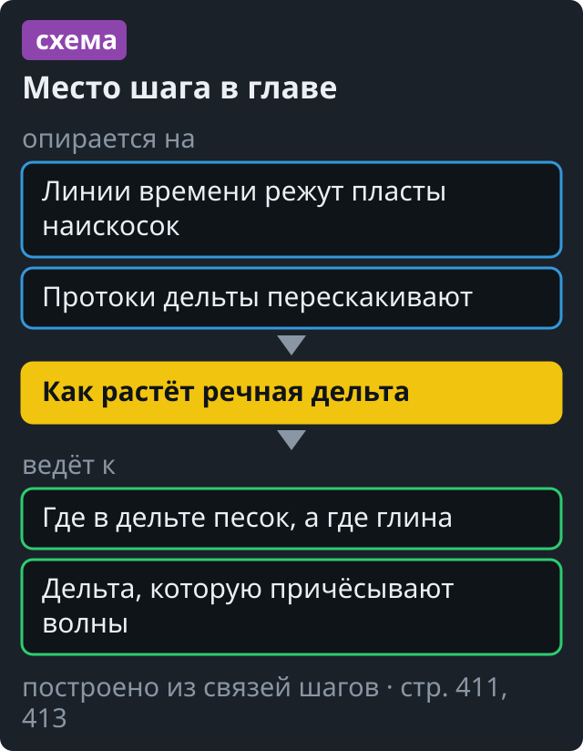
Место шага «Как растёт речная дельта» в главе: на что опирается и куда ведёт. класс B · схемаАнимация логики шага (утверждения шага по порядку), 18 с, без звука. класс B · схема · шаблон process_state; текст и страницы — из слоя
Проверь себя
Часть 2 · шаг 6 из 14 · ≈4 мин · формат: интерактив
Где в дельте песок, а где глина
Main facies of a river-dominated delta. Песчаные и глинистые фации речной дельты и их признаки: укрупнение зерна вверх и утонение от оси канала.
Почему этот шаг здесь
Зная, как растёт дельта, смотрим, какие фации она оставляет и как их узнать в керне и каротаже. модельстр. 411, 413, 414, 415
Суть
Песчаные коллекторы речной дельты — отложения распределительных проток и устьевых баров. Заливы, марши и лагуны разделяют пески и дают глинистые барьеры. Фации узнают по укрупнению зерна вверх по разрезу, а в каротаже — по утонению и измельчению от оси канала. модельстр. 411, 413, 414, 415
Как это работает
Механизм
Главные фации речной дельты и их размещение показаны на рис. 9.14. Песчаные фации-коллекторы — отложения распределительных проток (distributary channels) и устьевых баров (distributary mouth-bars). модельстр. 411, 414
Межпротоковые заливы, марши и лагуны разделяют песчаные фации и создают глинистые барьеры в коллекторах. Иногда они дают нефтематеринские породы. модельстр. 411
Как делает специалист
В обнажениях разные фации распознают по взаимоотношениям фаций и по характерному укрупнению зерна вверх по разрезу (coarsening-upward) с типичным набором осадочных текстур (рис. 9.15). модельстр. 413
В недрах те же признаки видны в керне и на каротаже, включая утонение и измельчение отклика каротажа по мере удаления от оси канала (рис. 9.15). модельстр. 413
На рис. 9.15: песчаник распределительного канала каменноугольного (пенсильванского) возраста; схематические разрезы наступающего устьевого бара и тел заполнения канала; обобщённый вертикальный профиль через песчаное тело устьевого бара. модельстр. 415
Частая ошибка
Вся дельта — сплошной песчаный пласт.
Что это значит для данных
На каротаже бар даёт укрупнение вверх: например, гамма уменьшается вверх по разрезу. модельстр. 411, 413, 414, 415
Глинистые барьеры заливов разбивают коллектор на отдельные тела. модельстр. 411, 413, 414, 415
Форму кривой (воронка или колокол) можно использовать как признак фации в автоматической классификации. гипотезамодельстр. 411, 413, 414, 415
Решение на данных
Признаки
укрупнение зерна вверх
утонение и измельчение от оси канала
глины заливов между песками
ПравилоУкрупнение вверх — признак наступающего устьевого бараВыводЖдать отдельных песчаных тел, разделённых глинамиКонтрпримерЗаполнение канала может давать иной профиль, чем бар
Аналогия
Похоже на сортировку при загрузке: грубое ложится ближе к источнику, тонкое уносится дальше. модель
Где аналогия не работает: Сортировка в программе точная, а в природе зерно смешано, и граница фаций размыта.
Линза неэффективности
Входные данныеКерн, каротаж, обнаженияРучные шагиОписание керна, выделение фаций по форме кривойТочки сужденияКанал или барВремяВ главе не указаноТипичные ошибкиНе заметить глинистые барьеры между песками
Новые понятия
устьевой бар (mouth bar) — Песчаное тело, которое откладывается у устья протоки
межпротоковый залив (interdistributary bay) — Мелководье между рукавами дельты
укрупнение зерна вверх (coarsening-upward) — Зерно в разрезе становится крупнее снизу вверх
глинистый барьер — Прослой глины, разделяющий песчаные тела
нефтематеринская порода — Порода, в которой образуются углеводороды
Источник
4 цитаты автора со страницами
наблюдение. Песчаные фации-коллекторы речной дельты — отложения распределительных проток и устьевых баров. пересказ модели
«Sandy reservoir facies are deposits of distributary channels and distributary mouth-bars.» — автор, стр. 411
наблюдение. Межпротоковые заливы, марши и лагуны разделяют пески, создают глинистые барьеры и иногда дают нефтематеринские породы. пересказ модели
«Interdistributary bays, marshes, and lagoons separate sandy facies and provide shale barriers in subsurface reservoirs, and sometimes, they provide hydrocarbon source rocks.» — автор, стр. 411
наблюдение. Фации распознают по укрупнению зерна вверх по разрезу с характерным набором осадочных текстур. пересказ модели
«facies can be recognized in outcrop by facies relationships and by a distinctive coarsening-upward grain size with a characteristic assemblage of sedimentary structures (Fig. 9.15).» — автор, стр. 413
наблюдение. В недрах те же признаки видны в керне и на каротаже, включая утонение и измельчение отклика от оси канала. пересказ модели
«In the subsurface, these same features can be identified in cores and on well logs, including a lateral thinning and fining log response away from the channel axis (Fig. 9.15).» — автор, стр. 413
Иллюстрации
Место шага «Где в дельте песок, а где глина» в главе: на что опирается и куда ведёт. класс B · схема
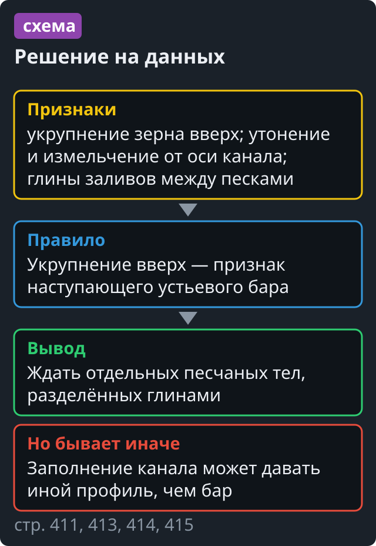
Решение на данных в шаге «Где в дельте песок, а где глина»: признаки, правило, вывод. класс B · схема
Проверь себя
Часть 2 · шаг 7 из 14 · ≈5 мин · формат: интерактив
Лучший песок — у устья протоки
Distributary mouth bars in Prudhoe Bay field. Как положение в устьевом баре определяет сортировку и проницаемость песка (Прудо-Бей).
Почему этот шаг здесь
Пример месторождения показывает, как процесс отложения устьевого бара задаёт проницаемость. модельстр. 415, 416
Суть
В Прудо-Бей в устьевом баре выделили семь песчаных литофаций. Лучше всего отсортированный и самый проницаемый песок отложился у вершины бара во время паводков. Мелкий и хуже отсортированный материал лёг дальше; поэтому даже внутри одного бара фации и проницаемость прерывисты. модельстр. 415, 416
Как это работает
Механизм
Tye и Hickey (2001) изучили процессы образования устьевых баров на месторождении Прудо-Бей (Prudhoe Bay). В коллектор устьевого бара пробурили горизонтальную скважину длиной 1000 футов (300 м) и отобрали три керна. модельстр. 415
В керне выделили семь песчаных литофаций; все от умеренно до очень хорошо отсортированных и от тонко- до очень тонкозернистых. модельстр. 415
Шесть литофаций имеют среднюю горизонтальную проницаемость 12–40 мД. Седьмая, лучше всего отсортированная, — в среднем 129 мД. модельстр. 415
Происхождение литофаций определили по процессам и осадкам современных речных дельт. Считается, что паводковые шлейфы осадка из проток отложили лучше отсортированный и самый проницаемый песок у вершины, самой проксимальной части бара, и вдоль его проксимального края (рис. 9.16). модельстр. 415, 416
Более мелкий и хуже отсортированный песок и ил отложились дальше, при более слабом течении. модельстр. 415
Как делает специалист
За долгое время многократное раздвоение устьевых проток при наступании создало широкий пласт, параллельный берегу (strike-parallel), из многочисленных устьевых баров. модельстр. 416
Нюансы
Однако в пределах одного бара фации и проницаемость прерывисты. модельстр. 416
На рис. 9.16 — палеогеографическая реконструкция фациальных ассоциаций формации Romeo и карты трёх слоёв от проксимального к дистальному. модельстр. 416
Частая ошибка
Внутри одного песчаного бара проницаемость одинаковая.
Что это значит для данных
Проницаемость меряют по керну; её распределение в баре выводят из модели отложения. модельстр. 415, 416
Среднее по бару скрывает разницу между фациями: 12–40 мД против 129 мД. модельстр. 415, 416
Положение скважины относительно вершины бара можно использовать как признак для прогноза проницаемости. гипотезамодельстр. 415, 416
Решение на данных
Признаки
положение у вершины бара
лучшая сортировка
ПравилоБлиже к вершине бара — лучше сортировка и выше проницаемостьВыводЛучший коллектор — в проксимальной части бараКонтрпримерДистальная часть бара: мелкий плохо отсортированный песок и ил
Аналогия
Похоже на кэш: ближе к источнику данные свежее и быстрее, дальше — медленнее. модель
Где аналогия не работает: Кэш обновляется, а распределение песка в баре застыло таким, каким его оставил паводок.
Линза неэффективности
Входные данныеКерн, горизонтальная скважина, проницаемостьРучные шагиВыделение литофаций в кернеТочки сужденияГде в баре лучший коллекторВремяВ главе не указаноТипичные ошибкиСчитать бар однородным
Новые понятия
литофация — Тип породы с определёнными зерном, сортировкой и текстурой
сортировка — Насколько одинаковы зёрна по размеру
проницаемость, мД (md) — Способность породы пропускать жидкость; миллидарси — единица
проксимальный / дистальный — Ближний к источнику / дальний
вывод. Считается, что паводковые шлейфы отложили лучше отсортированный и самый проницаемый песок у вершины бара и вдоль проксимального края. пересказ модели
«Geoscientists believe that sediment plumes emanating from distributary channels during flood stage deposited the best-sorted and most-permeable sands (the seventh lithofacies) at the apex or most-proximal part of the distributary mouth bars, as well as along the proximal-bar margin (Fig. 9.16).» — автор, стр. 415
вывод. Более мелкий и хуже отсортированный материал отложился дистальнее при слабом течении. пересказ модели
«Finer-grained, more poorly sorted sands and muds were deposited more distally, under lower flow-regime conditions.» — автор, стр. 415
вывод. Многократное раздвоение устьевых проток создало широкий пласт из многочисленных баров. пересказ модели
«Over a long period of time, repeated bifurcation of distributary mouth channels during progradation led to the development of a broad, strike-parallel sheet composed of numerous mouth bars.» — автор, стр. 416
наблюдение. В пределах одного бара фации и проницаемость прерывисты. пересказ модели
«However, across a single bar, there are discontinuities in facies and permeability.» — автор, стр. 416
Иллюстрации
Место шага «Лучший песок — у устья протоки» в главе: на что опирается и куда ведёт. класс B · схема
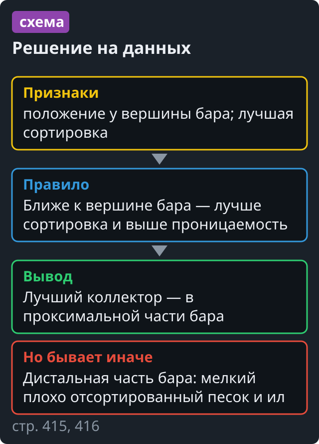
Решение на данных в шаге «Лучший песок — у устья протоки»: признаки, правило, вывод. класс B · схемаАнимация логики шага (признаки → правило → вывод), 15 с, без звука. класс B · схема · шаблон step_procedure; текст и страницы — из слоя
Проверь себя
Часть 3 · шаг 8 из 14 · ≈4 мин · формат: интерактив
Дельта под месторождением Прудо-Бей
Reservoir example: Romeo Zone of Prudhoe Bay field. Какие дельтовые фации дают продукцию в зоне Romeo месторождения Прудо-Бей и как раздвоение проток распределяет песок.
Почему этот шаг здесь
§9.4.2: от модели речной дельты переходим к реальному месторождению, где её фации стали коллектором. модельстр. 416, 417, 419
Суть
Нижний интервал Прудо-Бей, зона Romeo, сложен фронтом речной дельты и продельтой; его разрабатывают в основном горизонтальными скважинами. Продуктивны песчаники распределительных проток и устьевых баров. Раздвоение проток собирает самый крупный песок на вершинах баров и вдоль их краёв. модельстр. 416, 417, 419
Как это работает
Механизм
Общая геология месторождения Прудо-Бей (Аляска) в отложениях речной дельты древней реки Sagavanirktok разобрана в главе 7. Самые продуктивные породы месторождения — речные, отложения разветвлённых (braided) рек. модельстр. 416
Нижний интервал, зона Romeo (рис. 9.16–9.18), сложен в основном отложениями фронта речной дельты и продельты. В последние годы его разрабатывают, в основном горизонтальными скважинами. модельстр. 416
История отложения: низкоуклонные тонкозернистые речные системы наступали на юго-восток примерно на 60 миль (100 км) от источника. Отдельные русла разделялись илистыми поймами; вниз по течению они раздваивались и образовывали дельтовую равнину и устьевые бары (рис. 9.16). модельстр. 416, 417
Как делает специалист
Устьевые протоки обычно раздваиваются (рис. 9.17). Раздвоения разделяют литофации: более крупный материал собирается на вершинах баров ниже точки раздвоения и вдоль краёв баров. модельстр. 417
На рис. 9.19 — типичное чередование литофаций Romeo и отклик гамма-каротажа в скважине 07-06. модельстр. 419
Что это значит для данных
Гамма-каротаж в зоне Romeo показывает чередование литофаций (рис. 9.19). модельстр. 416, 417, 419
Крупный песок сосредоточен у вершин баров; скважина мимо вершины попадёт в худший коллектор. модельстр. 416, 417, 419
Карты точек раздвоения проток можно использовать для выбора трасс горизонтальных скважин. гипотезамодельстр. 416, 417, 419
Аналогия
Похоже на развилки сети: на каждом разветвлении самый тяжёлый поток уходит в определённое русло. модель
Где аналогия не работает: Маршрутизацию можно перенастроить, а распределение песка закреплено в породе.
Линза неэффективности
Входные данныеКерн, гамма-каротаж, палеогеографические картыРучные шагиВосстановление проток и баровТочки сужденияГде вершины баровВремяВ главе не указаноТипичные ошибкиСчитать песок равномерно распределённым
Новые понятия
разветвлённая река (braided river) — Река с множеством переплетающихся рукавов
продельта (prodelta) — Самая удалённая от берега часть дельты с тонким осадком
фронт дельты (delta front) — Подводная часть дельты у устьев
пойма (floodplain) — Низина вдоль реки, заливаемая в паводок
раздвоение (bifurcation) — Деление протоки на два рукава
Источник
5 цитат автора со страницами
наблюдение. Самые продуктивные породы Прудо-Бей — отложения разветвлённых рек. пересказ модели
«The most prolific reservoir rocks in the field are of fluvial, braided-river origin.» — автор, стр. 416
наблюдение. Зона Romeo сложена в основном фронтом речной дельты и продельтой и разрабатывается в основном горизонтальными скважинами. пересказ модели
«The lower stratigraphic interval, called the Romeo Zone (Figs. 9.16–9.18), is composed mainly of river-dominated delta-front and prodelta deposits (Fig. 7.22 and 7.23, and Fig. 9.17) that in recent years have been targeted for production, mainly from horizontal wells (Tye and Hickey, 2001; Tye et al., 1999).» — автор, стр. 416
наблюдение. Продуктивные дельтовые фации — песчаники распределительных проток и устьевых баров. пересказ модели
«Productive deltaic facies are distributary-channel and distributary mouth-bar sandstones (Figs. 9.18 and 9.19).» — автор, стр. 416
наблюдение. Речные системы наступали на юго-восток примерно на 60 миль (100 км) от источника. пересказ модели
«The depositional history depicts southeastward progradation of low-gradient, fine-grained fluvial systems that extended about 60 miles (100 km) from their source area.» — автор, стр. 416
вывод. Устьевые протоки обычно раздваиваются, и раздвоения собирают более крупный материал на вершинах баров ниже раздвоения и вдоль краёв баров. пересказ модели
«Distributary-mouth channels typically bifurcate as shown, and the bifurcations segregate lithofacies by concentrating the coarser-grained sediment on the bar apices downstream of the bifurcation point and along bar margins.» — автор, стр. 417
Иллюстрации
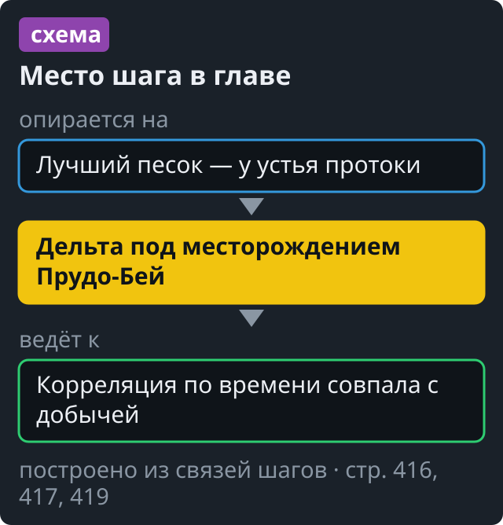
Место шага «Дельта под месторождением Прудо-Бей» в главе: на что опирается и куда ведёт. класс B · схема
Часть 3 · шаг 9 из 14 · ≈3 мин · формат: ролик-разбор
Корреляция по времени совпала с добычей
Sequence-stratigraphic correlation of the Romeo interval. Почему корреляция по времени лучше согласуется с историей добычи, чем литологическая.
Почему этот шаг здесь
Пример того, как идея клиноформ меняет понимание реального коллектора. модельстр. 417, 418
Суть
Речное отложение дало сильные латеральные и вертикальные смены фаций и неоднородный коллектор. Раньше пласты коррелировали по литологии; Tye и др. (1999) по корреляции по времени лучше совместили скважины с историей добычи. До этого не замечали пологого наклона песчаников, и корреляции были неверными. модельстр. 417, 418
Как это работает
Механизм
Речное отложение дало значительные латеральные и вертикальные смены фаций. Это создало высокую латеральную и вертикальную неоднородность коллектора. модельстр. 417
Прежние исследования коррелировали песчаники и глины по литостратиграфическим признакам. Tye и др. (1999) лучше совместили корреляции скважин с историей добычи по секвенс- (временной) стратиграфической схеме (рис. 9.18). модельстр. 417
Как делает специалист
На рис. 9.18 сравниваются корреляции до и после исследования. В литостратиграфической прерывист только интервал IA. модельстр. 418
В секвенс-стратиграфической видно подошвенное налегание (downlap) по пологому наклону базальных интервалов. Стратиграфия не плитообразная: песчаные дельтовые клинья вниз по падению переслаиваются с глинами залива и продельты/шельфа. модельстр. 418
Нюансы
До секвенс-стратиграфической интерпретации пологий наклон песчаников не распознавали, и это вело к неверным корреляциям. модельстр. 417
Частая ошибка
Пласты в дельте лежат горизонтальными плитами от скважины к скважине.
Что это значит для данных
История добычи — проверка корреляции: верная модель согласуется с откликом скважин. модельстр. 417, 418
Литологическая корреляция показала плитообразные пласты, которых нет. модельстр. 417, 418
Согласие модели с историей добычи можно мерить числом — ошибкой адаптации. гипотезамодельстр. 417, 418
Решение на данных
Признаки
корреляция согласуется с историей добычи
видно пологое падение пластов
ПравилоПредпочесть корреляцию по времени, если она лучше объясняет добычуВыводПласты — клинья, а не плитыКонтрпримерИнтервал IA прерывист и в литологической корреляции
Аналогия
Похоже на проверку гипотезы на продакшен-данных: схема, которая объясняет реальные логи, побеждает. модель
Где аналогия не работает: Логи сервиса полны, а история добычи косвенная и объясняется несколькими моделями.
Линза неэффективности
Входные данныеКаротаж скважин, история добычиРучные шагиПостроение двух корреляций и сверка с добычейТочки сужденияКакая корреляция вернаВремяВ главе не указаноТипичные ошибкиНе заметить пологий наклон пластов
Новые понятия
неоднородность коллектора — Изменчивость свойств пласта по латерали и вертикали
история добычи — Записи дебитов и обводнённости скважин во времени
подошвенное налегание (downlap) — Наклонные слои ложатся на подстилающую поверхность под углом
клин (wedge) — Тело, утоняющееся в одну сторону
Источник
4 цитаты автора со страницами
вывод. Речное отложение дало значительные смены фаций и высокую неоднородность коллектора. пересказ модели
«River-dominated deposition resulted in significant lateral and vertical facies changes, which caused a high degree of lateral and vertical heterogeneity in the resulting reservoir.» — автор, стр. 417
наблюдение. Tye и др. лучше совместили корреляции скважин с историей добычи по временной стратиграфической схеме. пересказ модели
«However, Tye et al. (1999) were better able to match well correlations with production history using a sequence- or time-stratigraphic correlation scheme (Fig. 9.18).» — автор, стр. 417
вывод. До секвенс-стратиграфической интерпретации пологий наклон песчаников оставался незамеченным, что вело к неверным корреляциям. пересказ модели
«Prior to this sequence stratigraphic interpretation, the gently dipping nature of these reservoir sandstones was unrecognized and led to improper correlations.» — автор, стр. 417
вывод. После исследования стратиграфия не плитообразная: песчаные клинья переслаиваются вниз по падению с глинами. пересказ модели
«The poststudy interpretation shows the stratigraphy is not tabular, instead, sand-prone deltaic wedges interfinger downdip with bay and prodelta/shelf shales. *After Tye et al. (1999).» — автор, стр. 418
Иллюстрации
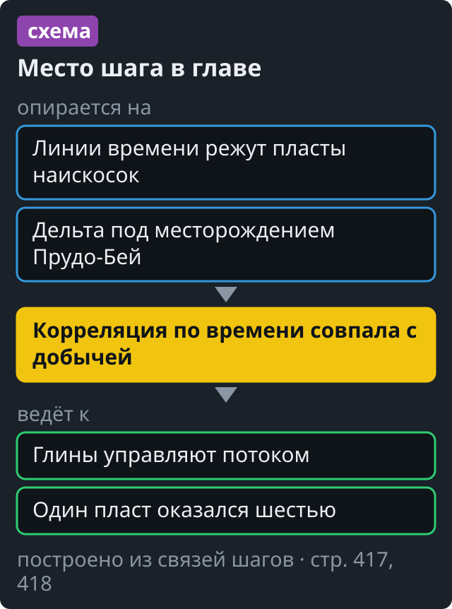
Место шага «Корреляция по времени совпала с добычей» в главе: на что опирается и куда ведёт. класс B · схема
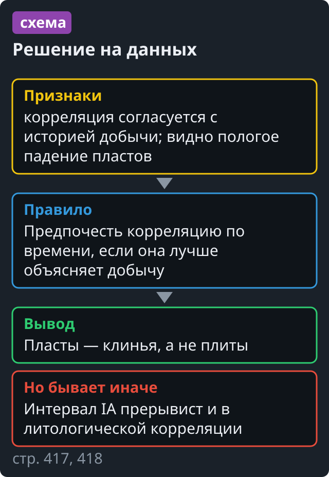
Решение на данных в шаге «Корреляция по времени совпала с добычей»: признаки, правило, вывод. класс B · схемаАнимация логики шага (признаки → правило → вывод), 15 с, без звука. класс B · схема · шаблон step_procedure; текст и страницы — из слоя
Проверь себя
Часть 3 · шаг 10 из 14 · ≈2 мин · формат: интерактив
Скважина змейкой вскрывает больше песка
Mouth-bar knowledge and horizontal well paths. Почему синусоидальная горизонтальная скважина вскрывает больше высокопроницаемых литофаций.
Почему этот шаг здесь
Знание о строении баров сразу превращается в решение о траектории скважины. модельстр. 417
Суть
Понимание образования устьевых баров повысило нефтеотдачу Прудо-Бей. Горизонтальная скважина с керном дала сведения о латеральном строении баров, включая проницаемость. Из этого следовало, что синусоидальный горизонтальный ствол встретит больше высокопроницаемых литофаций, чем обычный. модельстр. 417
Как это работает
Как делает специалист
Понимание образования устьевых баров привело к росту нефтеотдачи на Прудо-Бей. модельстр. 417
Подробные сведения о латеральном строении баров, включая проницаемость, получили по горизонтальной скважине с керном, а не по обычным вертикальным кернам. модельстр. 417
Это дало понимание: синусоидальная горизонтальная траектория вскроет больше высокопроницаемых литофаций, чем обычная скважина. модельстр. 417
Что это значит для данных
Горизонтальный керн показывает латеральную изменчивость, которую вертикальный керн не видит. модельстр. 417
Вертикальная скважина даёт одну точку на бар и не покажет, где лучший песок. модельстр. 417
Траекторию можно оптимизировать по модели проницаемости бара. гипотезамодельстр. 417
Аналогия
Похоже на обход нескольких шардов одним запросом вместо одного шарда. модель
Где аналогия не работает: Запрос можно перезапустить, а горизонтальный ствол бурят один раз.
Как это делается сейчас
Сейчас траектории ведут геонавигацией в реальном времени по каротажу во время бурения. гипотезамодельстр. 417
Линза неэффективности
Входные данныеГоризонтальный керн, модель бараРучные шагиПроектирование траекторииТочки сужденияСинусоида или прямой стволВремяВ главе не указаноТипичные ошибкиСудить о латеральном строении по вертикальному керну
Новые понятия
нефтеотдача (recovery) — Доля нефти, которую удаётся извлечь
горизонтальная скважина — Скважина, идущая вдоль пласта
синусоидальная траектория — Ствол, волнообразно проходящий вверх и вниз по пласту
Источник
2 цитаты автора со страницами
наблюдение. Понимание образования устьевых баров привело к росту нефтеотдачи на Прудо-Бей. пересказ модели
«Insights gained into the formation of distributary mouth bars have led to improved recovery in the Prudhoe Bay field.» — автор, стр. 417
вывод. Сведения о строении баров по горизонтальной скважине с керном дали понимание: синусоидальная траектория вскроет больше высокопроницаемых литофаций, чем обычная скважина. пересказ модели
«Detailed information on the lateral attributes of the mouth bars (including permeability), gained from the horizontal, cored well rather than from interpretations of standard vertical cores, provided the knowledge that a sinusoidal, horizontal well path would contact more high-permeability lithofacies than would a conventional well.» — автор, стр. 417
Иллюстрации
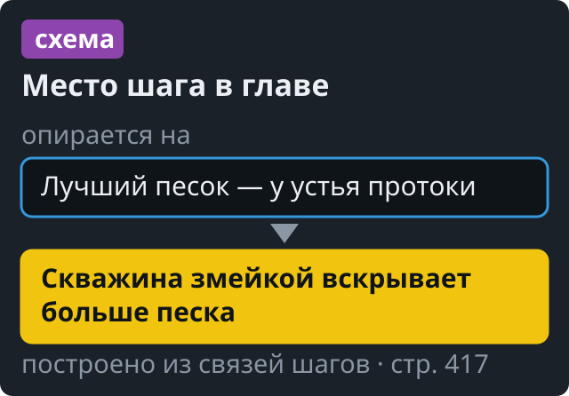
Место шага «Скважина змейкой вскрывает больше песка» в главе: на что опирается и куда ведёт. класс B · схема
Часть 3 · шаг 11 из 14 · ≈4 мин · формат: интерактив
Глины управляют потоком
Shale continuity and fluid flow in Prudhoe Bay deltaic facies. Как непрерывные и прерывистые глины влияют на поток и разработку.
Почему этот шаг здесь
Глины между песками в дельте — не помеха, а инструмент управления заводнением. модельстр. 417, 418, 420, 421
Суть
Глины оказались особенно важны для добычи в дельтовых фациях Прудо-Бей. Одни глины непрерывны на площади больше расстояния между скважинами, другие прерываются из-за размыва или выклинивания. Непрерывные глины создают вертикальные барьеры потоку и помогают направить заводнение. модельстр. 417, 418, 420, 421
Как это работает
Механизм
Глины особенно важны для добычи и фильтрации в дельтовых фациях Прудо-Бей. Некоторые глины непрерывны на площади больше расстояния между скважинами. модельстр. 417, 418
Другие глины менее непрерывны из-за размыва вышележащим песчаником или из-за стратиграфического выклинивания (рис. 9.20). модельстр. 418, 420
Перфорацию в горизонтальных скважинах ограничили дельтовыми песчаниками. Так избежали конкуренции за воду между этими менее проницаемыми песчаниками и вышележащими более проницаемыми речными (рис. 9.21, 9.22). модельстр. 418
На рис. 9.20 — часть корреляции по каротажу через песчаник Sadlerochit: бежевый — пойма, жёлтый — речные и протоковые фации, белый — устьевой бар, фронт дельты и продельта/шельф; интервалы Romeo, Tango, Victor, X-ray, Zulu. модельстр. 420
На рис. 9.22 горизонтальная скважина пробурена в фациях проток и баров, разделённых глинами. Глины делят песчаники на отсеки и защищают от наступания газовой шапки. модельстр. 421
Нюансы
Рис. 9.21: местами все три глины отсутствуют из-за неотложения или размыва, а местами все три разделяют соседние слои коллектора. модельстр. 420
Только при такой детальности стратиграфии можно эффективно управлять гравитационным дренированием, заводнением и методами увеличения нефтеотдачи. модельстр. 420
Частая ошибка
Глина в коллекторе всегда только мешает добыче.
Что это значит для данных
Непрерывность глины проверяют корреляцией скважин и поведением воды и газа при добыче. модельстр. 417, 418, 420, 421
Глина, непрерывная на карте, может быть размыта между скважинами. модельстр. 417, 418, 420, 421
Карты непрерывности глин можно строить как вероятностные. гипотезамодельстр. 417, 418, 420, 421
Решение на данных
Признаки
глина непрерывна шире сетки скважин
под глиной песок с нефтью
ПравилоНепрерывная глина — барьер потокуВыводМожно разделить перфорацию и направить заводнениеКонтрпримерГлина размыта вышележащим песчаником — барьера нет
Аналогия
Похоже на перегородки между отсеками сети: изолируют сегменты и направляют трафик. модель
Где аналогия не работает: Перегородку в сети ставят по плану, а глины размыты местами, и где — известно только по скважинам.
Линза неэффективности
Входные данныеКорреляция по каротажу, данные о воде и газеРучные шагиКартирование глинТочки сужденияНепрерывна ли глина между скважинамиВремяВ главе не указаноТипичные ошибкиСчитать прерывистую глину барьером
Новые понятия
выклинивание (pinch-out) — Утонение пласта до исчезновения
перфорация — Отверстия в колонне для притока из пласта
газовая шапка — Скопление газа над нефтью
гравитационное дренирование — Стекание нефти вниз под действием тяжести
методы увеличения нефтеотдачи — Способы добыть больше нефти сверх обычного
Источник
6 цитат автора со страницами
наблюдение. Некоторые глины непрерывны на площади больше расстояния между скважинами, а другие прерываются из-за размыва или выклинивания. пересказ модели
«areas larger than that of the well spacing, but other shales are less continuous because of erosion by an overlying sandstone or by stratigraphic pinch-out (Fig. 9.20).» — автор, стр. 418
вывод. Непрерывные глины создают вертикальные барьеры потоку и помогают сфокусировать заводнение. пересказ модели
«Continuous shales create vertical flow barriers and help to focus a waterflood.» — автор, стр. 418
наблюдение. Ограничив перфорацию дельтовыми песчаниками, избежали конкуренции за воду с вышележащими речными песчаниками. пересказ модели
«By restricting perforations in horizontal wells to deltaic sandstones, developers avoided competition for water between these lower-permeability sandstones and overlying higher-permeability fluvial sandstones (Figs. 9.21 and 9.22) (Tye et al., 1999).» — автор, стр. 418
наблюдение. Местами все три глины отсутствуют из-за неотложения или размыва, а местами разделяют соседние слои. пересказ модели
«In places, all three shales are absent as a result of nondeposition or erosion, whereas in other locations, all three shales separate adjacent reservoir layers.» — автор, стр. 420
вывод. Только при такой детальности стратиграфии можно эффективно управлять дренированием, заводнением и увеличением нефтеотдачи. пересказ модели
«Only with this level of stratigraphic detail can gravity drainage, waterflood, and enhanced oil recovery depletion mechanisms be effectively managed.» — автор, стр. 420
вывод. Глины делят песчаники на отсеки и защищают от наступания газовой шапки. пересказ модели
«The shales compartmentalize the sandstones and shield against gas-cap encroachment.» — автор, стр. 421
Иллюстрации
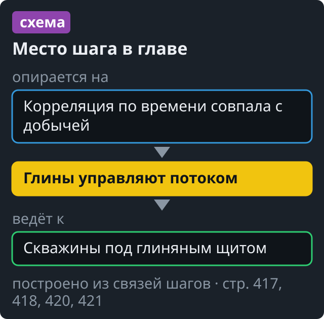
Место шага «Глины управляют потоком» в главе: на что опирается и куда ведёт. класс B · схема
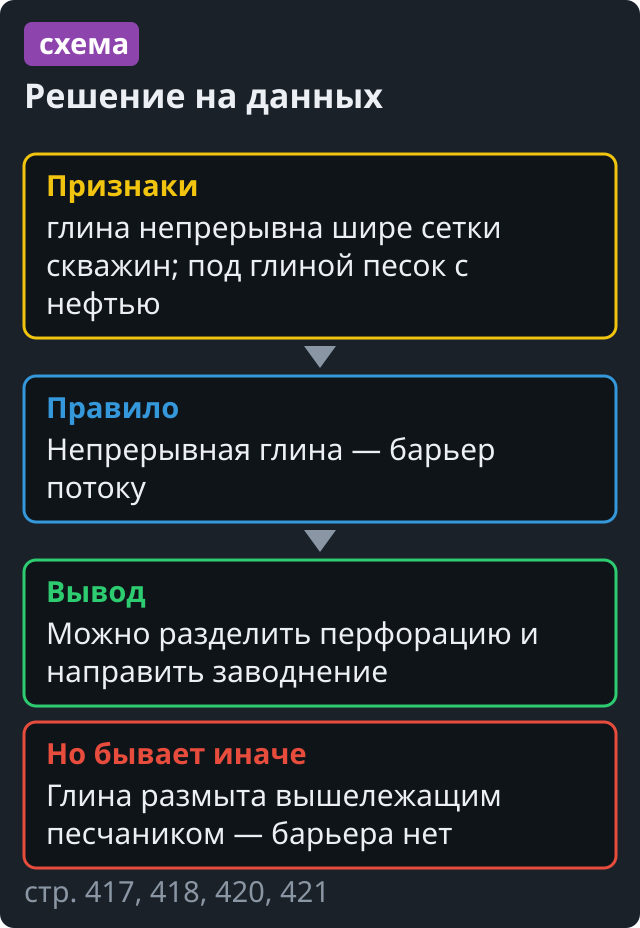
Решение на данных в шаге «Глины управляют потоком»: признаки, правило, вывод. класс B · схемаАнимация логики шага (признаки → правило → вывод), 15 с, без звука. класс B · схема · шаблон step_procedure; текст и страницы — из слоя
Проверь себя
Часть 3 · шаг 12 из 14 · ≈4 мин · формат: практикум на данных
Скважины под глиняным щитом
Sidetrack 09-35A and horizontal well 11-30. Как картирование экранирующих глин позволило получить новую нефть боковым и горизонтальным стволом.
Почему этот шаг здесь
Два примера, где знание о глинах дало новую добычу. модельстр. 418, 419, 421, 422
Суть
Вертикальная скважина давала более 300 баррелей в сутки, но вода росла. Глину на 8950 футах закартировали как экран, и боковой горизонтальный ствол под ней дал около 400 баррелей в сутки. Скважина 11-30 под глиной залива, защищавшей от газовой шапки, стабилизировалась на 1600 баррелей в сутки. модельстр. 418, 419, 421, 422
Как это работает
Как делает специалист
Вертикальная скважина с мая 1992 по январь 1993 стабильно давала более 300 баррелей нефти в сутки (BOPD). За это время росла добыча воды, значит, добыча нефти со временем заметно снизилась бы (рис. 9.23). модельстр. 418
Глинистый интервал на глубине 8950 футов закартировали как экранирующую глину. Это указывало, что нефть может быть заперта в подстилающем дельтовом песчанике. модельстр. 418
В песчаник пробурили боковой горизонтальный ствол (нестандартное заканчивание), и он дал новую добычу около 400 BOPD (рис. 9.23). модельстр. 418, 419
На рис. 9.23 скважина 09-35A добывает из базальных песчаников Romeo без конкуренции с вышележащей перфорацией. Глина на 8936 футах (2725 м) служит барьером от подтягивания воды; у 09-35A нефть немного выросла, а вода резко снизилась. модельстр. 421
Второй пример: горизонтальная скважина 11-30 пробурена под глиной залива, которая экранировала от газовой шапки (рис. 9.24). Горизонтальный участок 894 фута (272 м) прошёл целиком в целевом песчанике, из них 475 футов (144 м) — эффективная нефтенасыщенная толщина. модельстр. 419, 422
К 1999 году добыча стабилизировалась на 1600 BOPD при низком газовом факторе. Такие детальные исследования продлевают жизнь этого гигантского месторождения. модельстр. 422
Что это значит для данных
Рост доли воды в добыче — сигнал, что нужна новая точка вскрытия. модельстр. 418, 419, 421, 422
Если глина не экранирует, боковой ствол обводнится так же. модельстр. 418, 419, 421, 422
Кандидатов на боковые стволы можно ранжировать по карте экранирующих глин и росту обводнённости. гипотезамодельстр. 418, 419, 421, 422
Решение на данных
Признаки
рост воды в добыче
закартированная экранирующая глина
дельтовый песчаник под глиной
ПравилоПод непрерывной глиной может остаться нефтьВыводБурить боковой горизонтальный ствол под экранКонтрпримерПрерывистая глина не удержит воду или газ
Аналогия
Похоже на перенос нагрузки на новый сервер за файрволом, когда старый перегружен. модель
Где аналогия не работает: Сервер можно поднять где угодно, а нефть есть только там, где её запер реальный экран.
Линза неэффективности
Входные данныеИстория добычи, каротаж, карта глинРучные шагиКартирование экрана, проектирование бокового стволаТочки сужденияЭкранирует ли глинаВремяВ главе не указаноТипичные ошибкиБурить без проверки непрерывности экрана
Новые понятия
BOPD — Баррелей нефти в сутки
боковой ствол (sidetrack) — Новый ствол из существующей скважины
экранирующая глина (sealing shale) — Глина, не пропускающая флюид
эффективная толщина (net pay) — Часть пласта, которая даёт нефть
газовый фактор (gas/oil ratio) — Объём газа на единицу добытой нефти
Источник
5 цитат автора со страницами
вывод. За это время росла добыча воды, и это указывало, что добыча нефти со временем заметно снизится. пересказ модели
«During that time, water production increased, indicating that oil production in that well would decline considerably over time (Fig. 9.23).» — автор, стр. 418
вывод. Глину на 8950 футах закартировали как экран; это указывало, что нефть может быть заперта в подстилающем песчанике. пересказ модели
«A shale interval at 8950 ft. was mapped as a sealing shale, which suggests that oil might be trapped in an underlying deltaic sandstone.» — автор, стр. 418
наблюдение. Боковой горизонтальный ствол в этот песчаник дал новую добычу около 400 BOPD. пересказ модели
«well was drilled as an unconventional completion into the sandstone, and it led to new production of approximately 400 BOPD (Fig. 9.23).» — автор, стр. 419
наблюдение. Скважина 11-30 пробурена под глиной залива, экранировавшей от газовой шапки; 894 фута ствола прошли в песчанике, 475 футов — эффективная толщина. пересказ модели
«The horizontal well 11-30 was drilled beneath a bay shale that acted as a shield from the overlying gas cap. 894 ft.» — автор, стр. 419
наблюдение. К 1999 году добыча стабилизировалась на 1600 BOPD при низком газовом факторе. пересказ модели
«stabilized at 1600 BOPD, with a low gas/oil ratio (Tye et al., 1999).» — автор, стр. 422
Иллюстрации
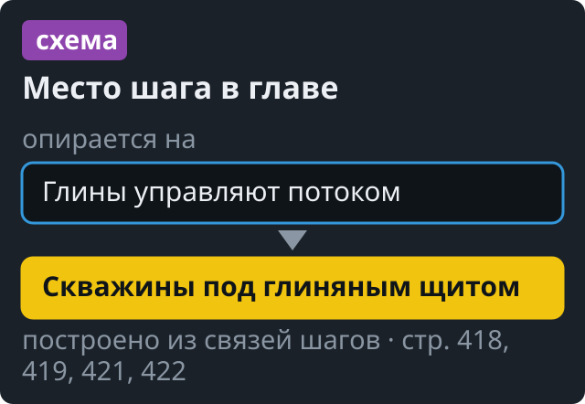
Место шага «Скважины под глиняным щитом» в главе: на что опирается и куда ведёт. класс B · схема
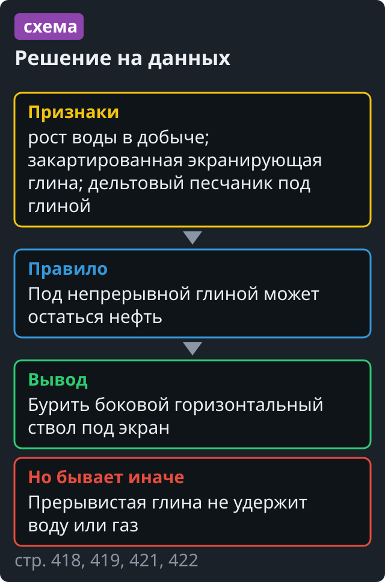
Решение на данных в шаге «Скважины под глиняным щитом»: признаки, правило, вывод. класс B · схема
Проверь себя
Часть 3 · шаг 13 из 14 · ≈3 мин · формат: интерактив
Один пласт оказался шестью
Kuparuk River field, Alaska. Как секвенс-стратиграфия разделила единицу A месторождения Купарук на шесть песчаных тел.
Почему этот шаг здесь
Ещё один пример: корреляция по времени разбила «единый» пласт на отдельные тела. модельстр. 422, 423
Суть
Купарук — второе по величине нефтяное месторождение Северной Америки. Вначале каждую продуктивную единицу считали латерально непрерывным песчаником. Корреляция по секвенс-стратиграфии показала, что единица A — шесть отдельных тел, наступавших к морю и разделённых морскими глинами. модельстр. 422, 423
Как это работает
Механизм
Похожий пример — меловое месторождение Kuparuk River на Северном склоне Аляски. Это второе по величине нефтяное месторождение Северной Америки с 6 млрд баррелей начальных запасов нефти в пласте (6BBSTOOIP). К 2006 году добыто 2 млрд баррелей (2BBO). модельстр. 422
Добыча идёт из двух интервалов — единиц A и C. В начале разработки каждую единицу считали латерально непрерывным песчаным телом. модельстр. 422
Однако секвенс-стратиграфические корреляции показали: единица A состоит из шести отдельных песчаных тел. Они наступали к морю (на северо-восток), и каждое отделено высокочастотной трансгрессивной морской глиной (рис. 9.25). модельстр. 422
Как делает специалист
На рис. 9.25 — типичная гамма-каротажная кривая с единицами A3–A6, наступательный рисунок каждой более молодой единицы A1–A6, схема наступания шести единиц и единицы с нанесёнными разломами. модельстр. 423
Частая ошибка
Пласт с похожим каротажем по всему месторождению — одно непрерывное тело.
Что это значит для данных
Гамма-каротаж позволяет различить отдельные единицы A1–A6. модельстр. 422, 423
Если считать единицу непрерывной, оценка связности и заводнения будет неверной. модельстр. 422, 423
Число отдельных тел в пласте — параметр, который сильно влияет на прогноз добычи. гипотезамодельстр. 422, 423
Аналогия
Похоже на таблицу, которая оказалась шестью разными таблицами с похожими колонками. модель
Где аналогия не работает: Таблицы можно объединить запросом, а песчаные тела разделены глиной физически.
Линза неэффективности
Входные данныеГамма-каротаж, корреляцияРучные шагиСеквенс-стратиграфическая корреляцияТочки сужденияОдно тело или несколькоВремяВ главе не указаноТипичные ошибкиСчитать единицу непрерывной
Новые понятия
STOOIP — Начальные запасы нефти в пласте в поверхностных условиях
трансгрессивная глина — Глина, отложенная при наступлении моря на сушу
высокочастотный — Повторяющийся в короткие промежутки геологического времени
Источник
3 цитаты автора со страницами
наблюдение. Kuparuk River — второе по величине нефтяное месторождение Северной Америки. пересказ модели
«This is the second largest oil field in North America, with 6BBSTOOIP.» — автор, стр. 422
наблюдение. В начале разработки каждую единицу считали латерально непрерывным песчаным телом. пересказ модели
«In the early days of field development each unit was considered a laterally continuous sandstone body.» — автор, стр. 422
вывод. Секвенс-стратиграфия показала, что единица A — шесть отдельных песчаных тел, разделённых морскими глинами. пересказ модели
«However, sequence stratigraphy correlations revealed that the A unit consists of six separate sandstone bodies that prograded in the seaward (northeast) direction, each separated by a high-frequency transgressive marine shale (Fig. 9.25).» — автор, стр. 422
Иллюстрации
Место шага «Один пласт оказался шестью» в главе: на что опирается и куда ведёт. класс B · схема
Проверь себя
Часть 3 · шаг 14 из 14 · ≈4 мин · формат: интерактив
Дельта, которую причёсывают волны
Wave-dominated deltas: processes and deposits. Как волны и вдольбереговой перенос строят дельту и почему разрез становится грубее вверх.
Почему этот шаг здесь
Начало §9.5 для сравнения: при сильных волнах дельта строится иначе, чем речная. модельстр. 423
Суть
На открытом волнам берегу осадок разносится вдоль берега. При достаточном поступлении песка берег наращивается вбок и наступает в бассейн, а устье реки сдвигается по направлению вдольберегового потока. Наступание береговых валов даёт разрез, который вверх становится песчанее и грубее. модельстр. 423
Как это работает
Механизм
На берегу, не защищённом от волн и течений, осадок, дошедший до берега, разносится вдоль него (рис. 9.4 и 9.6). модельстр. 423
Если песка поступает достаточно, береговая зона со временем наращивается вбок и наступает в сторону бассейна. Последовательное развитие такого берега показано на рис. 9.26. модельстр. 423
Здесь прямой берег питается вдольбереговым переносом (longshore drift). Берег не только наступает и наращивается вбок, но и устье реки постепенно отклоняется по направлению переноса. модельстр. 423
Как делает специалист
Итог — веерообразное или дугообразное песчаное тело, как дельта Нила, очень обширная и довольно мощная (рис. 9.27). модельстр. 423
Наступание песчаных береговых валов создаёт разрез, который от подошвы к кровле становится песчанее и грубее (рис. 9.28). Пористость и проницаемость тоже растут вверх из-за влияния размера зерна (глава 6, рис. 9.29). модельстр. 423
Кроме укрупнения вверх, в разрезе преобладают косая слоистость от волн и течений, битые раковины и другие признаки высокоэнергетических процессов (рис. 9.29). модельстр. 423
Нюансы
Описание вертикальной последовательности на выданных страницах обрывается на середине фразы. модельстр. 423
Частая ошибка
Все дельты устроены одинаково, как дельта Миссисипи.
Что это значит для данных
На каротаже наступающий берег даёт укрупнение вверх, как и устьевой бар. модельстр. 423
Похожая форма кривой у речной и волновой дельты — различать надо по текстурам керна. модельстр. 423
Похоже на сервис, где входящий поток сразу перераспределяется по кластеру, а не копится в одном месте. модель
Где аналогия не работает: Перераспределение в кластере настраивают, а направление вдольберегового переноса задаёт природа.
Линза неэффективности
Входные данныеКерн, каротажРучные шагиОписание текстур и размера зернаТочки сужденияРечная или волновая дельтаВремяВ главе не указаноТипичные ошибкиПутать речную и волновую дельту по одной кривой
Новые понятия
волновая дельта (wave-dominated delta) — Дельта, где главный фактор — волны
вдольбереговой перенос (longshore drift) — Перенос песка вдоль берега волнами
косая слоистость (cross-bedding) — Наклонные слойки внутри пласта от течений
высокоэнергетические процессы — Сильные волны и течения
Источник
6 цитат автора со страницами
вывод. На берегу, открытом волнам и течениям, осадок разносится вдоль берега. пересказ модели
«Along a coast that is unprotected from waves and ocean currents, sediment that reaches the shoreline is dispersed laterally (Figs. 9.4 and 9.6).» — автор, стр. 423
вывод. Если песка поступает достаточно, береговая зона наращивается вбок и наступает в бассейн. пересказ модели
«If sufficient sand is supplied to the shoreline, over time, the shore zone will accrete laterally and prograde basinward.» — автор, стр. 423
вывод. При вдольбереговом переносе берег не только наступает и наращивается вбок, но и устье реки отклоняется по направлению переноса. пересказ модели
«In this case, the linear shoreline is fed by longshore drift; not only does the shoreline prograde and accrete laterally, but also is the river mouth progressively deflected in the direction of longshore drift.» — автор, стр. 423
вывод. Наступание песчаных береговых валов создаёт разрез, который от подошвы к кровле становится песчанее и грубее. пересказ модели
«Progradation of sandy beach ridges creates a vertical stratigraphic sequence that becomes progressively sandier and coarser-grained from the base to the top (Fig. 9.28).» — автор, стр. 423
вывод. Пористость и проницаемость тоже растут вверх из-за влияния размера зерна. пересказ модели
«Porosity and permeability also increase upward because of the grain-size effect discussed in Chapter 6 (Fig. 9.29).» — автор, стр. 423
наблюдение. В разрезе преобладают косая слоистость от волн и течений, битые раковины и признаки высокоэнергетических процессов. пересказ модели
«In addition to becoming coarser-grained and sandier from base to top, the vertical sequence of sedimentary structures exhibits a preponderance of wave- and current-derived cross-bedding, broken shell fragments, and other indicators of high-energy processes (Fig. 9.29).» — автор, стр. 423
Иллюстрации
Место шага «Дельта, которую причёсывают волны» в главе: на что опирается и куда ведёт. класс B · схемаАнимация логики шага (утверждения шага по порядку), 18 с, без звука. класс B · схема · шаблон process_state; текст и страницы — из слоя
Клиноформы — линии геологического времени — пересекают границы литологических пачек. Поэтому корреляция по сходству пород и корреляция по времени соединяют скважины по-разному. При корреляции по времени песчаники между скважинами могут оказаться разобщены глинами.
Пример дельты Меконга
Показать ответ
В современной дельте Меконга наступание датировано за последние 6000 лет. Сравнение двух корреляций показывает, что линии времени пересекают границы литофаций. Истинная корреляция по времени выявляет латеральные разрывы внутри литологических пачек.
Протоки дельты перескакивают
Показать ответ
Дельты подвержены переключению распределительных проток (channel switching). По Overeem и др. (2005), оно может влиять на развитие дельты даже сильнее, чем изменение уровня моря. Модель на рис. 9.12 показывает, как протоки из общей вершины меняют направление.
Дельты при падении уровня моря
Показать ответ
Дельты могут формироваться и при относительном падении уровня моря — это дельты низкого стояния (lowstand, shelf-margin). Падение уровня ведёт к врезанию долин и отступанию берега. Такие дельты обычно меньше и реже дельт высокого стояния.
Как растёт речная дельта
Показать ответ
В речной дельте волны и течения слабы, и осадок у берега не разносится. При достаточном пространстве для накопления дельта наступает на море, и линии времени пересекают границы фаций. Со временем вода мелеет, и река переключается в более глубокую сторону.
Где в дельте песок, а где глина
Показать ответ
Песчаные коллекторы речной дельты — отложения распределительных проток и устьевых баров. Заливы, марши и лагуны разделяют пески и дают глинистые барьеры. Фации узнают по укрупнению зерна вверх по разрезу, а в каротаже — по утонению и измельчению от оси канала.
Лучший песок — у устья протоки
Показать ответ
В Прудо-Бей в устьевом баре выделили семь песчаных литофаций. Лучше всего отсортированный и самый проницаемый песок отложился у вершины бара во время паводков. Мелкий и хуже отсортированный материал лёг дальше; поэтому даже внутри одного бара фации и проницаемость прерывисты.
Дельта под месторождением Прудо-Бей
Показать ответ
Нижний интервал Прудо-Бей, зона Romeo, сложен фронтом речной дельты и продельтой; его разрабатывают в основном горизонтальными скважинами. Продуктивны песчаники распределительных проток и устьевых баров. Раздвоение проток собирает самый крупный песок на вершинах баров и вдоль их краёв.
Корреляция по времени совпала с добычей
Показать ответ
Речное отложение дало сильные латеральные и вертикальные смены фаций и неоднородный коллектор. Раньше пласты коррелировали по литологии; Tye и др. (1999) по корреляции по времени лучше совместили скважины с историей добычи. До этого не замечали пологого наклона песчаников, и корреляции были неверными.
Скважина змейкой вскрывает больше песка
Показать ответ
Понимание образования устьевых баров повысило нефтеотдачу Прудо-Бей. Горизонтальная скважина с керном дала сведения о латеральном строении баров, включая проницаемость. Из этого следовало, что синусоидальный горизонтальный ствол встретит больше высокопроницаемых литофаций, чем обычный.
Глины управляют потоком
Показать ответ
Глины оказались особенно важны для добычи в дельтовых фациях Прудо-Бей. Одни глины непрерывны на площади больше расстояния между скважинами, другие прерываются из-за размыва или выклинивания. Непрерывные глины создают вертикальные барьеры потоку и помогают направить заводнение.
Скважины под глиняным щитом
Показать ответ
Вертикальная скважина давала более 300 баррелей в сутки, но вода росла. Глину на 8950 футах закартировали как экран, и боковой горизонтальный ствол под ней дал около 400 баррелей в сутки. Скважина 11-30 под глиной залива, защищавшей от газовой шапки, стабилизировалась на 1600 баррелей в сутки.
Один пласт оказался шестью
Показать ответ
Купарук — второе по величине нефтяное месторождение Северной Америки. Вначале каждую продуктивную единицу считали латерально непрерывным песчаником. Корреляция по секвенс-стратиграфии показала, что единица A — шесть отдельных тел, наступавших к морю и разделённых морскими глинами.
Дельта, которую причёсывают волны
Показать ответ
На открытом волнам берегу осадок разносится вдоль берега. При достаточном поступлении песка берег наращивается вбок и наступает в бассейн, а устье реки сдвигается по направлению вдольберегового потока. Наступание береговых валов даёт разрез, который вверх становится песчанее и грубее.
Кратко
Конспект
Часть 1. River-dominated delta deposits and reservoirs
Линии времени режут пласты наискосок. Клиноформы — линии геологического времени — пересекают границы литологических пачек. Поэтому корреляция по сходству пород и корреляция по времени соединяют скважины по-разному. При корреляции по времени песчаники между скважинами могут оказаться разобщены глинами. Для данных: Корреляция по сходству каротажа соединяет одинаковые породы, но не одновозрастные.
Пример дельты Меконга. В современной дельте Меконга наступание датировано за последние 6000 лет. Сравнение двух корреляций показывает, что линии времени пересекают границы литофаций. Истинная корреляция по времени выявляет латеральные разрывы внутри литологических пачек. Для данных: Датировки дают линии времени, по которым коррелируют скважины.
Протоки дельты перескакивают. Дельты подвержены переключению распределительных проток (channel switching). По Overeem и др. (2005), оно может влиять на развитие дельты даже сильнее, чем изменение уровня моря. Модель на рис. 9.12 показывает, как протоки из общей вершины меняют направление. Для данных: Переключение проток создаёт лопасти разного возраста, которые в скважинах выглядят похоже.
Дельты при падении уровня моря. Дельты могут формироваться и при относительном падении уровня моря — это дельты низкого стояния (lowstand, shelf-margin). Падение уровня ведёт к врезанию долин и отступанию берега. Такие дельты обычно меньше и реже дельт высокого стояния. Для данных: Дельта низкого стояния лежит дальше в бассейне, ниже по разрезу и связана с врезанными долинами.
Часть 2. Processes and Deposits
Как растёт речная дельта. В речной дельте волны и течения слабы, и осадок у берега не разносится. При достаточном пространстве для накопления дельта наступает на море, и линии времени пересекают границы фаций. Со временем вода мелеет, и река переключается в более глубокую сторону. Для данных: Наступание дельты оставляет в разрезе фации, смещённые к морю вверх по разрезу.
Где в дельте песок, а где глина. Песчаные коллекторы речной дельты — отложения распределительных проток и устьевых баров. Заливы, марши и лагуны разделяют пески и дают глинистые барьеры. Фации узнают по укрупнению зерна вверх по разрезу, а в каротаже — по утонению и измельчению от оси канала. Для данных: На каротаже бар даёт укрупнение вверх: например, гамма уменьшается вверх по разрезу.
Лучший песок — у устья протоки. В Прудо-Бей в устьевом баре выделили семь песчаных литофаций. Лучше всего отсортированный и самый проницаемый песок отложился у вершины бара во время паводков. Мелкий и хуже отсортированный материал лёг дальше; поэтому даже внутри одного бара фации и проницаемость прерывисты. Для данных: Проницаемость меряют по керну; её распределение в баре выводят из модели отложения.
Часть 3. Reservoir Example: Prudhoe Bay Field
Дельта под месторождением Прудо-Бей. Нижний интервал Прудо-Бей, зона Romeo, сложен фронтом речной дельты и продельтой; его разрабатывают в основном горизонтальными скважинами. Продуктивны песчаники распределительных проток и устьевых баров. Раздвоение проток собирает самый крупный песок на вершинах баров и вдоль их краёв. Для данных: Гамма-каротаж в зоне Romeo показывает чередование литофаций (рис. 9.19).
Корреляция по времени совпала с добычей. Речное отложение дало сильные латеральные и вертикальные смены фаций и неоднородный коллектор. Раньше пласты коррелировали по литологии; Tye и др. (1999) по корреляции по времени лучше совместили скважины с историей добычи. До этого не замечали пологого наклона песчаников, и корреляции были неверными. Для данных: История добычи — проверка корреляции: верная модель согласуется с откликом скважин.
Скважина змейкой вскрывает больше песка. Понимание образования устьевых баров повысило нефтеотдачу Прудо-Бей. Горизонтальная скважина с керном дала сведения о латеральном строении баров, включая проницаемость. Из этого следовало, что синусоидальный горизонтальный ствол встретит больше высокопроницаемых литофаций, чем обычный. Для данных: Горизонтальный керн показывает латеральную изменчивость, которую вертикальный керн не видит.
Глины управляют потоком. Глины оказались особенно важны для добычи в дельтовых фациях Прудо-Бей. Одни глины непрерывны на площади больше расстояния между скважинами, другие прерываются из-за размыва или выклинивания. Непрерывные глины создают вертикальные барьеры потоку и помогают направить заводнение. Для данных: Непрерывность глины проверяют корреляцией скважин и поведением воды и газа при добыче.
Скважины под глиняным щитом. Вертикальная скважина давала более 300 баррелей в сутки, но вода росла. Глину на 8950 футах закартировали как экран, и боковой горизонтальный ствол под ней дал около 400 баррелей в сутки. Скважина 11-30 под глиной залива, защищавшей от газовой шапки, стабилизировалась на 1600 баррелей в сутки. Для данных: Рост доли воды в добыче — сигнал, что нужна новая точка вскрытия.
Один пласт оказался шестью. Купарук — второе по величине нефтяное месторождение Северной Америки. Вначале каждую продуктивную единицу считали латерально непрерывным песчаником. Корреляция по секвенс-стратиграфии показала, что единица A — шесть отдельных тел, наступавших к морю и разделённых морскими глинами. Для данных: Гамма-каротаж позволяет различить отдельные единицы A1–A6.
Дельта, которую причёсывают волны. На открытом волнам берегу осадок разносится вдоль берега. При достаточном поступлении песка берег наращивается вбок и наступает в бассейн, а устье реки сдвигается по направлению вдольберегового потока. Наступание береговых валов даёт разрез, который вверх становится песчанее и грубее. Для данных: На каротаже наступающий берег даёт укрупнение вверх, как и устьевой бар.